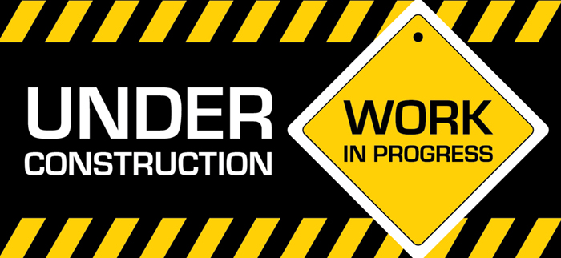

Robotics & Physical Computing In Shanghai
Robotics is the science and technology behind the design, manufacturing and application of robots. A robot is a programmable mechanical device that can perform tasks and interact with its environment, without the aid of human interaction.
Here In Shanghai Computer Science department, we offer a wide range of curriculums to all age groups using the most up to date educational robots and physical components suitable for our students.
